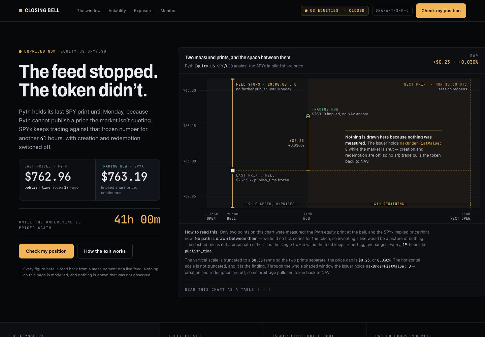
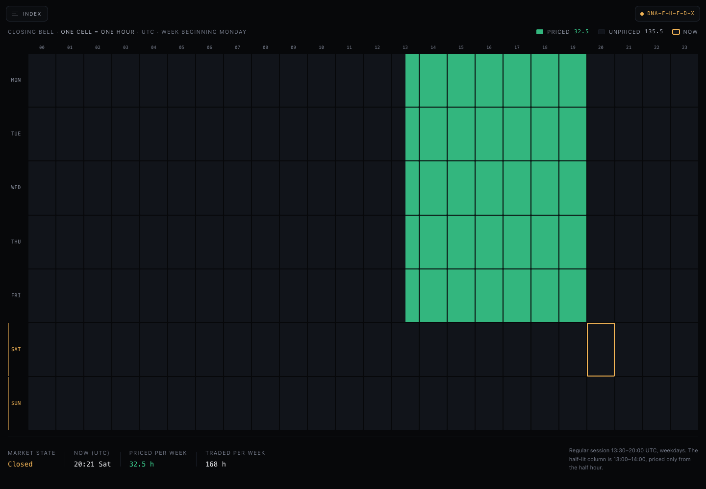
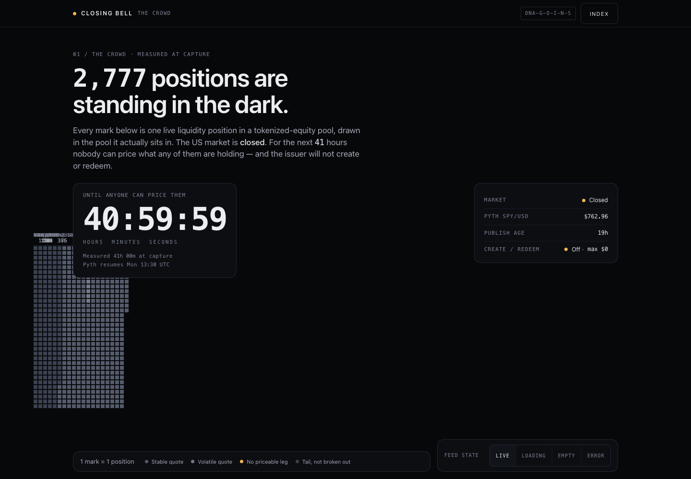

Closing Bell · design proposals · 2026-09-19
Every figure inside these proposals traces to a measurement against Solana mainnet or a live feed. Each was rendered in headless Chrome at desktop and 375px — none overflow. Screenshots below are the real render, not mockups.

“The feed stopped. The token didn’t.” Pyth’s SPY feed terminates hard at the closing bell. Two measured prints are plotted and nothing is drawn between them, because no tick series exists for the token.
It turns that limitation into the centrepiece: the largest annotation on the chart reads “Nothing is drawn here because nothing was measured.” It discloses its own truncated y-axis and states that the horizontal scale is not truncated, and that this is the finding.

The 168-hour week is the hero, full-bleed. A small green island of 32.5 priced hours floats in a field of 135.5 dead ones, with the amber “now” cell ringed alone out in Saturday night. The picture argues before a word is read.
The only file in the set with a flawless mechanical sweep: zero box-shadow, zero blur, zero gradients, zero web fonts. Carries its mixed-typography gene using three system registers instead of a network fetch.

Strong headline — “2,777 positions are standing in the dark” — and a genuinely good countdown readout. Every mark is meant to be one real liquidity position, clustered into the pool it sits in.
The signature visual failed. The crowd collapsed into a narrow grey column that
collides with the countdown card, pool labels overlap into illegible mush, and half the hero
is empty. The crowd is the concept. Also carries one backdrop-filter,
which is on the hard-no list.
{kind=link}
{kind=link}
{kind=link}